Отчёт о продукте и технической реализации (MVP)
Платформа: frontend.rusted-apple.com · API: api.rusted-apple.com
Дата: 30 мая 2026 г. · Статус: MVP, развёрнут в продакшн-окружении
О документе. Это сводный отчёт о продукте Phenograph (внутреннее кодовое имя бэкенда — Oblivion).
Описание архитектуры опирается на проектные материалы из каталога design/ (целевое видение системы),
а описание реализации — на фактический исходный код репозитория и на наблюдения, сделанные на живом стенде.
Все экранные снимки получены с работающего развёрнутого приложения. Документ намеренно честно разграничивает
реализованное, частично реализованное и целевое.
Phenograph — это платформа поддержки клинических решений для медицинской генетики. По одной фотографии лица пациента система выделяет морфологические признаки и формирует ранжированный список наиболее вероятных генетических синдромов, связанных с онтологией человеческого фенотипа (Human Phenotype Ontology, HPO). По сути это русско-/локально-ориентированный функциональный аналог мирового лидера рынка — Face2Gene (компания FDNA).
Продукт обслуживает две роли пользователей по проверенной бизнес-модели Face2Gene:
Технически система построена как набор из 7 независимых микросервисов на Rust (фреймворк Axum) с асинхронной обработкой через Apache Kafka и одностраничным фронтендом (SPA) на React. Сервисы спрятаны за единым API-шлюзом (nginx). Хранилища: PostgreSQL, Redis, объектное хранилище MinIO (S3), Elasticsearch.
Ключевая оговорка. На текущем этапе MVP само распознавание — это заглушка (stub):
сервис recognition игнорирует содержимое изображения и возвращает случайный top-10 синдромов из каталога
на 50 позиций после имитации задержки «инференса» в 0,5–2 с. При этом контракты сообщений и весь конвейер
обработки — промышленного качества, поэтому замена заглушки на реальную ML-модель не требует переделки остальной системы.
|
| Параметр | Значение |
|---|---|
| Микросервисов (Rust/Axum) | 7 + общая библиотека oblivion-common |
| Схем в PostgreSQL | 6 (auth, cases, labs, billing, notifier, reference) |
| HTTP-операций API | 24 бизнес-операции + health-проверки |
| Топиков Kafka | 3 рабочих (analysis.requests, analysis.results, notifications) |
| Синдромов в каталоге распознавания | 50 (со стабильными UUID) |
| Справочные данные | 50 синдромов + 100 HPO-терминов (сид) |
| Статус развёртывания | Живой стенд (frontend + API + TLS), демо-доступы засеяны |
Рынок распознавания генетических заболеваний по изображению лица консолидирован вокруг единственного лидера — FDNA с продуктом Face2Gene. Им пользуются около 70% генетиков мира в более чем 10 000 медицинских центрах 130 стран. Алгоритм DeepGestalt показывает 91% точности попадания в первую десятку диагнозов (Nature Medicine, 2019); база содержит свыше 150 000 изображений и более 5 000 заболеваний.
Бизнес-модель Face2Gene — фримиум с сетевым эффектом: приложение CLINIC бесплатно для врачей (в обмен на данные для обучения), монетизация — через продукт LABS для лабораторий по тарифной сетке:
| Тариф | Кейсов в месяц | Превышение |
|---|---|---|
| Bronze | 40 | $50/кейс |
| Silver | 80 | $50/кейс |
| Gold | 145 | $50/кейс |
| Platinum | 300 | $50/кейс |
| Bundle | 40–300 | $40/кейс |
Именно эта сетка тарифов воспроизведена в биллинг-сервисе Phenograph (см. раздел 5).
Рыночная возможность для Phenograph. В России и СНГ собственных решений в области фенотипирования по лицу не существует. Face2Gene используется отдельными генетиками в индивидуальном порядке, а главным барьером для распространения называют отсутствие русскоязычного интерфейса. Сегмент ИИ-диагностики редких заболеваний растёт темпами ~29% в год и достигнет ≈$5,5 млрд к 2029 г. Phenograph позиционируется как локализованный аналог с той же двусторонней бизнес-моделью (бесплатно врачам, платно лабораториям) и потенциалом первопроходца на недооохваченном рынке.
Полный конкурентный и рыночный анализ приведён в исходном материале
design/compass_artifact…md и не дублируется здесь целиком.
Ниже — обзор реального интерфейса, снятый с работающего стенда frontend.rusted-apple.com.
Приложение распознаёт роль пользователя (врач / лаборатория) и показывает соответствующую навигацию.
Публичная посадочная страница выполнена как «кинематографичный» прокручиваемый рассказ из трёх актов (двойная спираль ДНК → лицевая сетка из ориентиров → панель доказательной базы), за которым следуют блок возможностей и блок доказательств. Визуальный язык — сдержанный, «клинический», с акцентом на доверие (бейджи HIPAA / SOC 2 / GDPR, формулировка «Not a diagnostic device. Clinical decision support only»).
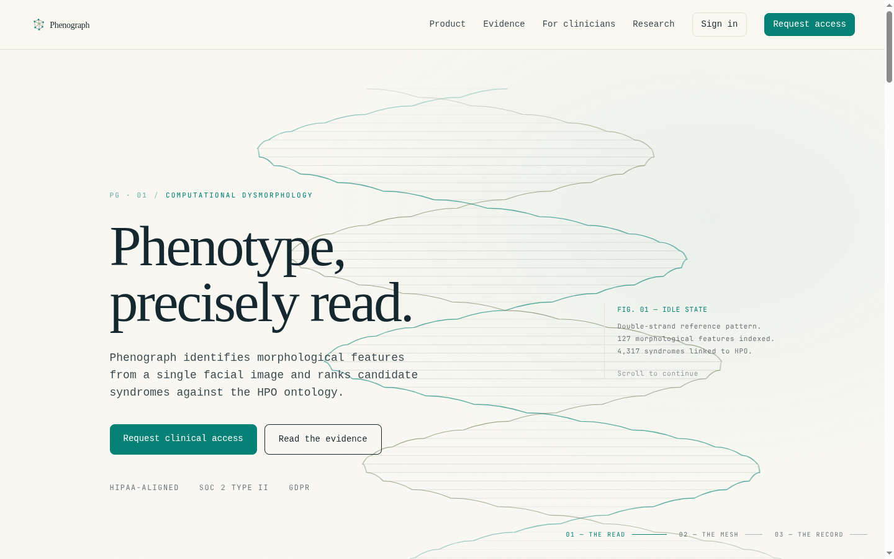
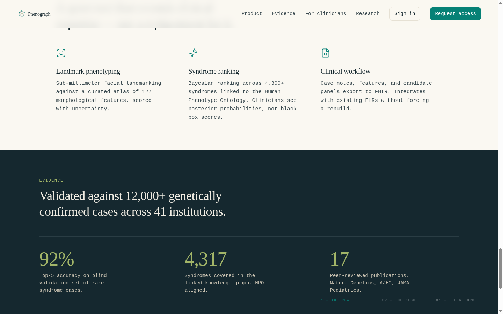
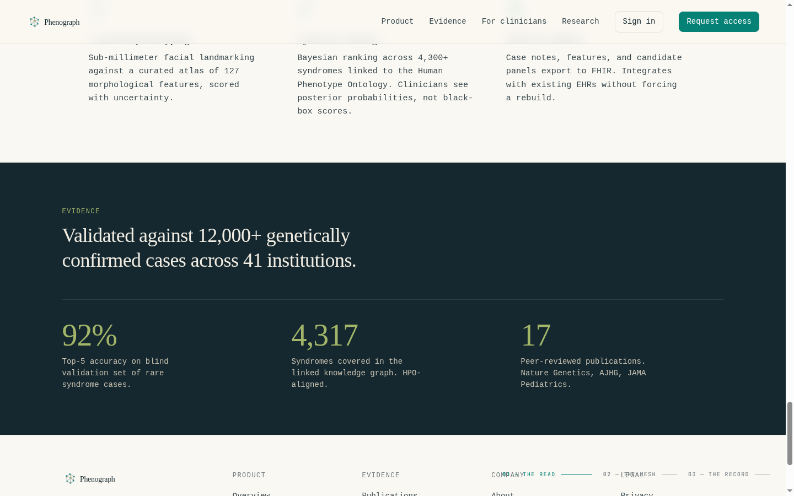
| Важно для отчёта. Цифры на лендинге (точность 92% top-5, 4 317 синдромов, 12 000+ подтверждённых случаев, 17 публикаций, 41 учреждение) — это маркетинговые заявления, отражающие целевое видение продукта, а не текущую реализацию. Фактический MVP-бэкенд оперирует каталогом на 50 синдромов и использует заглушку распознавания (см. раздел 6). |
Вход и регистрация по e-mail и паролю. Доступ к рабочему пространству ограничен (защищённые маршруты). После входа access-токен (JWT) хранится в браузере и автоматически обновляется по refresh-токену при истечении.
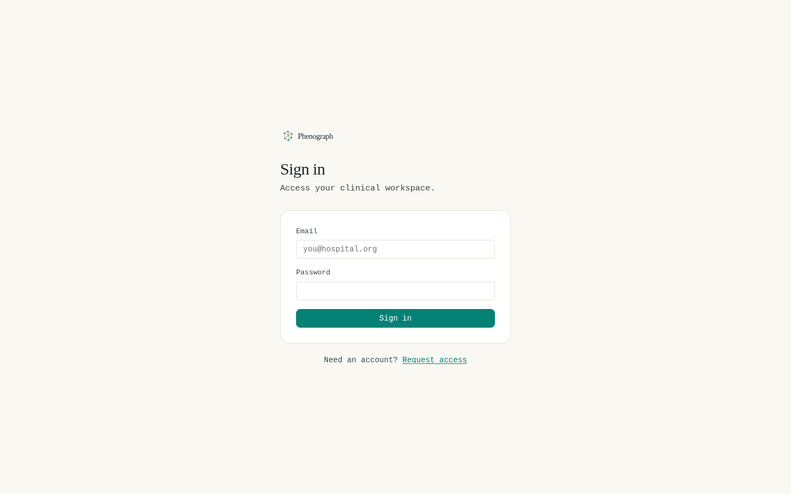
Домашний экран врача — список кейсов с фильтрами по статусу (все / в обработке / завершён / ошибка) и таблицей: пациент, возраст, статус, дата.
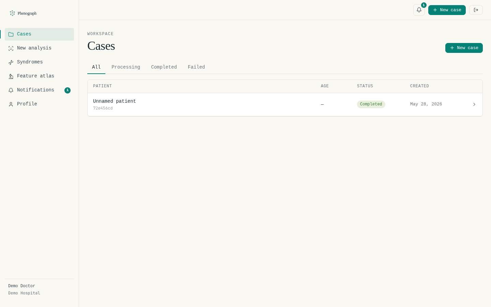
Создание нового анализа: метаданные пациента → загрузка изображения по защищённой (presigned) ссылке напрямую в объектное хранилище → подтверждение загрузки запускает асинхронный анализ.
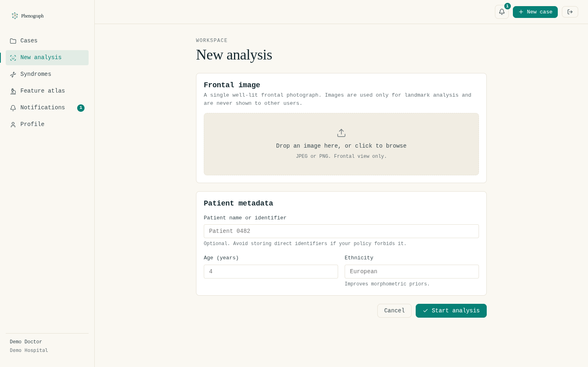
Ключевой экран продукта — карточка кейса с результатом. Слева — абстрактная визуализация лицевой сетки из ориентиров (фотография пациента принципиально не отображается — «For privacy, the patient photograph is never rendered»). Справа — ранжированный список из 10 синдромов-кандидатов с апостериорными оценками и индикаторами уверенности.
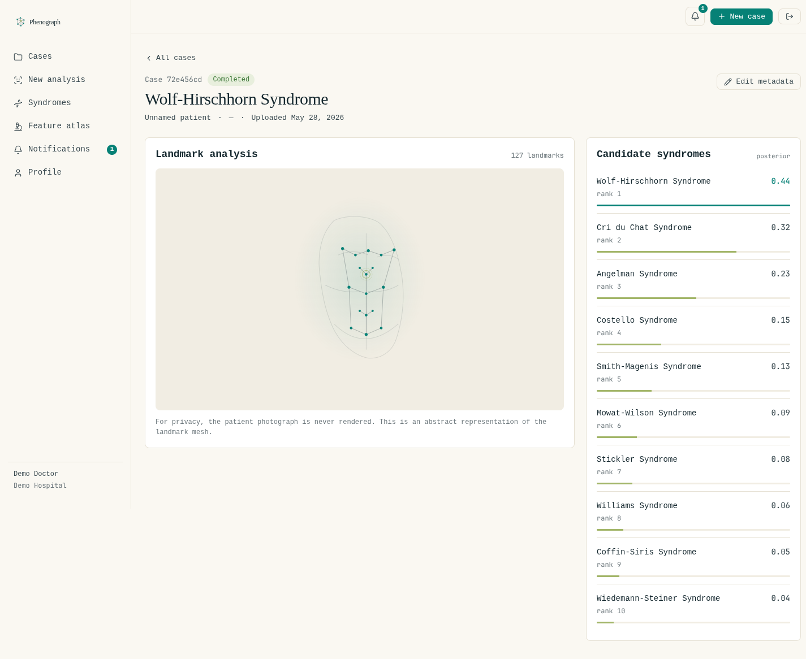
Раздел доступен обеим ролям. Справочник синдромов — поиск и постраничный просмотр; карточка синдрома содержит описание, OMIM-идентификатор, распространённость, тип наследования и связанные HPO-термины. Отдельный «атлас признаков» — поиск по терминам Human Phenotype Ontology.
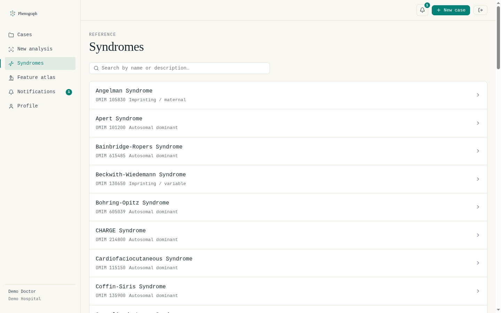
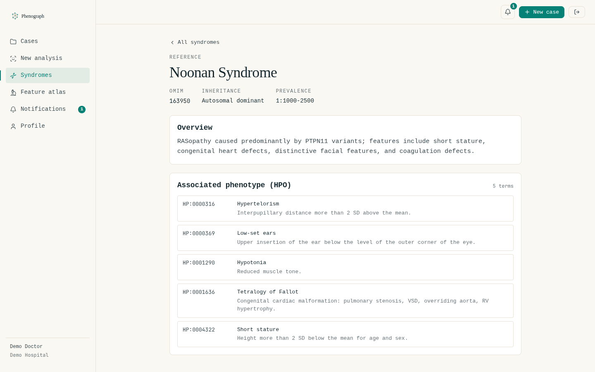
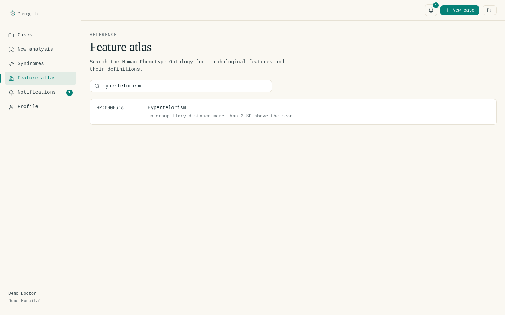
Лаборатория работает с пакетами (batch) изображений: постановка изображений в очередь, отправка батча, просмотр результатов по мере обработки, помесячный учёт потребления и выбор тарифа. Навигация лаборатории отличается от врачебной (Batches, New batch, Usage, Billing).
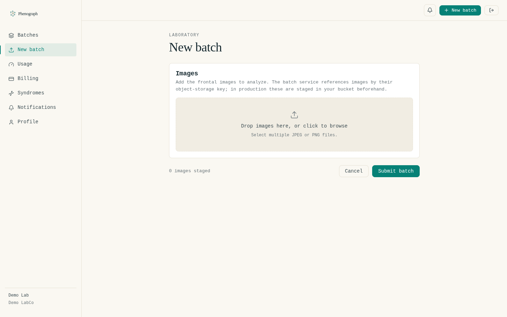
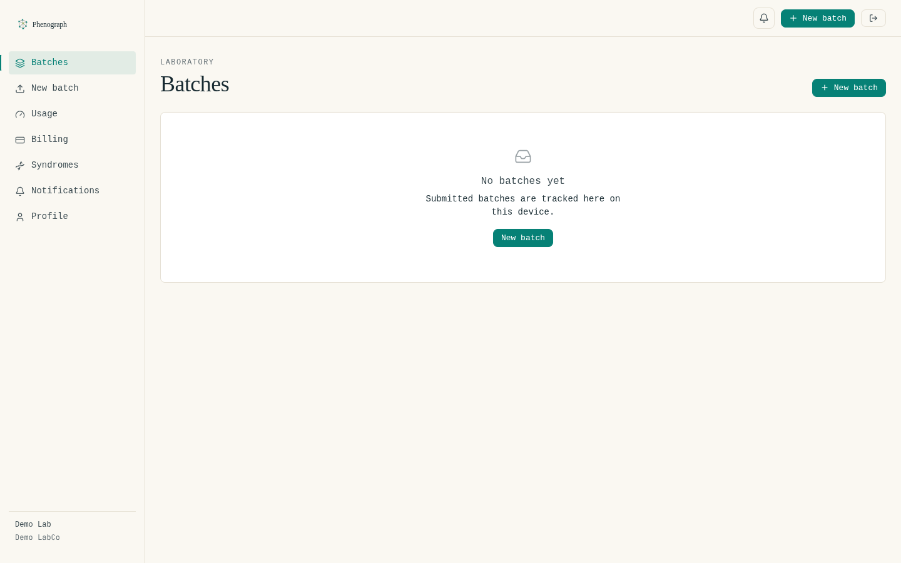
Замечание: на живом стенде у демо-лаборатории отсутствует активная подписка, а биллинг-страница в текущей сборке падает; в результате лабораторный/монетизационный сценарий не воспроизводится полностью end-to-end. Подробности — в разделе 10.
Уведомления формируются автоматически (например, «анализ готов») и отображаются в приложении с возможностью отметить прочитанным. Профиль показывает данные учётной записи.
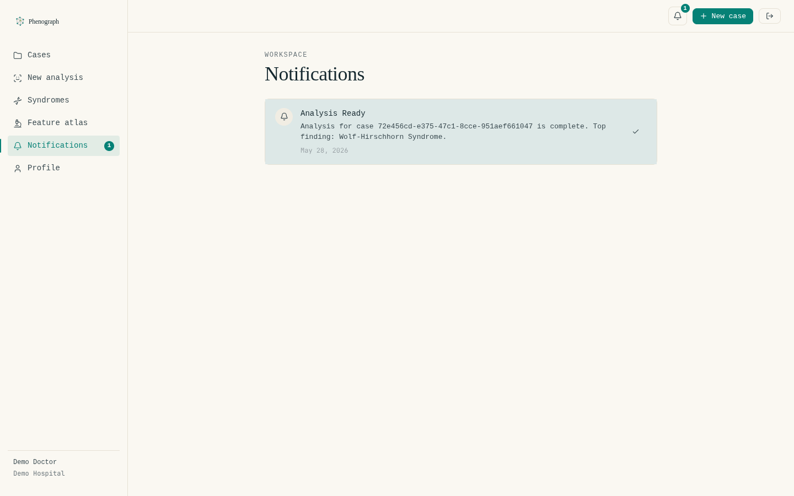
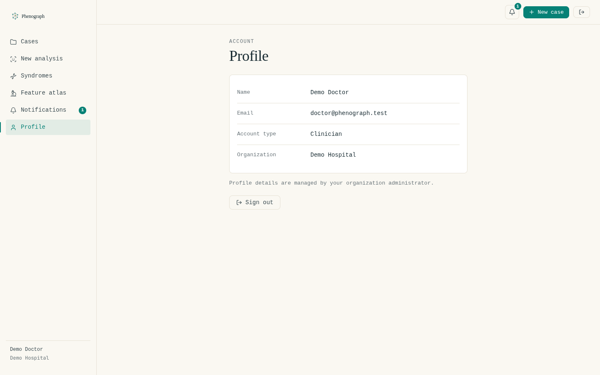
Проектные материалы (design/) описывают целевую облачную архитектуру: клиенты (web на React,
мобильное приложение на Flutter, Labs API по REST/gRPC) → пограничный слой (CDN, балансировщик) →
кластер Kubernetes с API-шлюзом (Kong/Traefik) и ограничителем запросов → микросервисы (Core: Auth, Case, Labs;
Async: Recognition на GPU, Notifier; Support: Reference, Billing) → шина Apache Kafka → хранилища
(PostgreSQL, S3/MinIO, Redis, Elasticsearch, векторная БД эмбеддингов лица, реестр моделей MLflow) →
наблюдаемость (Prometheus, Grafana, Jaeger, ELK).
Диаграмма целевой архитектуры приведена в проектных материалах design/ и здесь не дублируется.
Ключевые потоки данных в целевой модели:
analysis.requests).analysis.results) → Case Service.notifications) → Notifier → Email/Push/Webhook.Платформа реализована как 7 независимых сервисов на Rust/Axum за единым API-шлюзом (nginx), с инфраструктурой PostgreSQL / Apache Kafka / Redis / MinIO / Elasticsearch. Для продакшна подготовлены и проверены манифесты Kubernetes: сервисы разворачиваются как Deployments за Ingress (TLS), а stateful-компоненты (БД, шина, хранилища) — как StatefulSets/Deployments внутри кластера. Это приближает реализацию к целевой архитектуре из §4.1.
Статус развёртывания. Манифесты Kubernetes готовы к продакшн-развёртыванию. Публичный
демо-стенд rusted-apple.com, с которого сделаны экранные снимки, на момент подготовки отчёта
работает на упрощённом одномашинном варианте (systemd-юниты + Docker-инфраструктура, скрипт deploy.sh) —
см. §9.
|
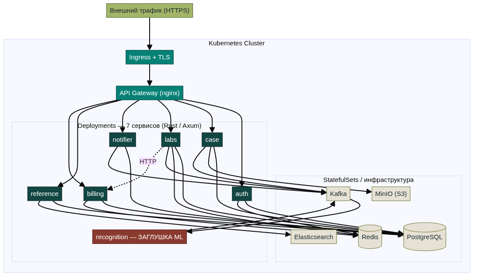
| Слой | Реализация |
|---|---|
| Клиент | React SPA (Phenograph), frontend.rusted-apple.com |
| Вход в кластер | Ingress + TLS (демо-стенд: системный nginx + Let's Encrypt); CORS, rate-limit, заголовки безопасности (CSP/HSTS) |
| API-шлюз | nginx, маршрутизация по префиксу пути |
| Сервисы | 7 сервисов Rust/Axum (порты 3001–3007) как Deployments (демо-стенд: systemd, Restart=always) |
| Шина сообщений | Apache Kafka 3.7 |
| Хранилища | PostgreSQL 16, Redis 7, MinIO (S3), Elasticsearch 8 — как StatefulSets/тома в кластере |
POST /cases — создаётся кейс (статус pending), возвращается presigned-URL для загрузки.PUT-запросом прямо в MinIO/S3 (без участия сервера).POST /cases/{id}/confirm-upload — сервис проверяет наличие объекта (HEAD), переводит кейс в processing
и публикует AnalysisRequest в топик analysis.requests.AnalysisResult в analysis.results.completed,
публикует уведомление в notifications.GET /cases/{id} каждые 2 с, пока статус не станет completed, и показывает диагнозы.POST /labs/batch — проверка роли lab → ограничитель запросов (Redis) → проверка квоты в биллинге
→ создание пакета и его элементов → по одному AnalysisRequest на каждое изображение (source = lab).batch_id.source = lab), помечает элементы пакета как
completed и инкрементирует счётчик обработанных; когда обработаны все — пакет становится completed.Все сервисы написаны на Rust поверх Axum и разделяют общую библиотеку oblivion-common, которая задаёт
единые контракты:
ApiResponse:
{ "status": "ok"|"error", "data": …|null, "error": …|null }.ServiceError с отображением на HTTP-коды
(404/400/401/403/409/500).AnalysisRequest, AnalysisResult,
DiagnosisEntry, NotificationMessage).CORS_ALLOWED_ORIGIN.Качество кода: запрещён unsafe, включён строгий линт (clippy::pedantic), модули покрыты
юнит-тестами (сериализация контрактов, генератор диагнозов, биллинговая арифметика и т.д.).
Единый конверт ответа (crates/oblivion-common):
// один и тот же конверт возвращает каждый HTTP-эндпоинт платформы
pub struct ApiResponse<T: Serialize> {
pub status: &'static str, // "ok" | "error"
pub data: Option<T>,
pub error: Option<String>,
}
impl<T: Serialize> ApiResponse<T> {
pub fn ok(data: T) -> Self {
Self { status: "ok", data: Some(data), error: None }
}
pub fn error(msg: impl Into<String>) -> Self {
Self { status: "error", data: None, error: Some(msg.into()) }
}
}
Контракты сообщений Kafka — общие для продюсеров и консьюмеров (интеграционный «костяк» системы):
pub struct AnalysisRequest {
pub request_id: Uuid,
pub case_id: Uuid,
pub image_key: String, // ключ объекта в S3/MinIO
pub source: AnalysisSource, // Doctor | Lab
pub batch_id: Option<Uuid>,
pub patient_ethnicity: Option<String>,
pub requested_at: DateTime<Utc>,
}
pub struct DiagnosisEntry {
pub syndrome_id: Uuid,
pub syndrome_name: String,
pub confidence: f64, // [0.0, 1.0]
pub rank: i32, // 1 = наиболее вероятный
}
pub struct AnalysisResult {
pub request_id: Uuid,
pub case_id: Uuid,
pub source: AnalysisSource,
pub batch_id: Option<Uuid>,
pub top_diagnoses: Vec<DiagnosisEntry>,
pub processing_time_ms: u64,
pub completed_at: DateTime<Utc>,
}
| Сервис | Порт | Назначение | Хранилища | Kafka |
|---|---|---|---|---|
| auth | 3001 | Регистрация, вход, JWT, refresh, профиль, выход | PostgreSQL, Redis | — |
| case | 3002 | CRUD кейсов, presigned-загрузка, запуск анализа, сохранение диагнозов | PostgreSQL, MinIO | publish requests / consume results / publish notifications |
| labs | 3003 | Пакеты лабораторий, результаты, потребление, тарифы | PostgreSQL, Redis | publish requests / consume results |
| recognition | 3004 | «Инференс» (заглушка): top-10 синдромов | — (каталог в коде) | consume requests / publish results |
| notifier | 3005 | Список уведомлений, отметка прочитанным, рассылка e-mail | PostgreSQL | consume notifications |
| reference | 3006 | Справочник синдромов и HPO, поиск | PostgreSQL, Elasticsearch | — |
| billing | 3007 | Тарифы, подписки, учёт потребления, проверка квоты | PostgreSQL, Redis | — |
Пароли хешируются Argon2id. При входе выдаётся пара токенов: короткоживущий access-JWT и
refresh-токен (случайный UUID, в БД хранится его SHA-256-хеш). POST /auth/refresh выполняет
ротацию (старый refresh удаляется, выдаётся новый). DELETE /auth/logout удаляет refresh из БД
и помещает access в чёрный список Redis на остаток времени жизни. JWT подписывается RS256 (при наличии RSA-ключей)
с откатом на HS256.
Хеширование пароля (Argon2id) и полезная нагрузка access-токена:
// регистрация: соль + Argon2id
let salt = SaltString::generate(&mut OsRng);
let password_hash = Argon2::default()
.hash_password(body.password.as_bytes(), &salt)?
.to_string();
// полезная нагрузка RS256 JWT
pub struct Claims {
pub sub: String, // UUID пользователя
pub email: String,
pub role: String, // "doctor" | "lab" | "admin"
pub exp: usize, // срок действия (Unix-время)
pub iat: usize,
}
Сердце врачебного сценария. Создаёт кейс и генерирует presigned PUT-URL (окно 15 минут) для прямой загрузки в MinIO.
На подтверждении проверяет наличие объекта (HEAD), переводит кейс в processing и публикует запрос в Kafka.
Фоновый consumer на analysis.results сохраняет диагнозы, ставит статус completed и публикует уведомление.
Проверка владения: кейс доступен только создавшему его пользователю.
Подтверждение загрузки запускает асинхронный анализ (confirm_upload):
let case = load_owned_case(&state, auth.user_id, id).await?;
if case.status != "pending" {
return Err(CaseError::InvalidState { current: case.status });
}
// объект действительно загружен в хранилище?
if !s3::check_object_exists(&state.s3, bucket, &case.image_key).await? {
return Err(CaseError::ImageNotFound { key: case.image_key });
}
db::update_case_status(&state.pool, id, "processing").await?;
let request = AnalysisRequest {
request_id: Uuid::new_v4(),
case_id: id,
image_key: case.image_key,
source: AnalysisSource::Doctor,
batch_id: None,
patient_ethnicity: case.patient_ethnicity,
requested_at: Utc::now(),
};
kafka::publish_analysis_request(&state.producer, request).await?; // → analysis.requests
Принимает пакет ключей изображений, последовательно: проверяет роль lab, применяет
ограничитель частоты (Redis, 10 запросов/мин на лабораторию), проверяет квоту через
биллинг (с 30-секундным кэшем в Redis), создаёт пакет и элементы, публикует по одному запросу на изображение.
Эндпоинты потребления и тарифов проксируют биллинг-сервис.
Хранит тарифы (засеяны Bronze/Silver/Gold/Platinum/Bundle), подписки и помесячный учёт. check-quota —
внутренний эндпоинт: при исчерпании квоты возвращает 429 с заголовком Retry-After (секунды до начала
следующего месяца). Счётчик потребления дублируется в Redis (быстрый путь) и в PostgreSQL (источник истины).
См. отдельный раздел 6. Кратко: каталог 50 синдромов, случайный top-10, имитация задержки 0,5–2 с,
прямой эндпоинт POST /recognize для тестов + основной режим — consumer Kafka.
Consumer топика notifications: сохраняет уведомление в БД и пытается отправить e-mail через SMTP
(в dev-режиме localhost:1025 — только логирует намерение). HTTP-эндпоинты: список уведомлений пользователя
и отметка прочитанным.
Справочные данные только для чтения. Полнотекстовый поиск сначала пробует Elasticsearch, при недоступности или
пустом индексе прозрачно откатывается на ILIKE в PostgreSQL. Карточка синдрома отдаётся вместе со
связанными HPO-терминами.
| Схема | Таблицы (ключевые поля) |
|---|---|
| auth | users (email, password_hash, role, name, organization), refresh_tokens (token_hash, expires_at) |
| cases | cases (user_id, patient_name/age/ethnicity, image_key, status), diagnoses (case_id, syndrome_name, confidence, rank) |
| labs | batches (lab_id, status, total/processed_items), batch_items (batch_id, image_key, case_id, status) |
| billing | plans (name, monthly_limit, overage_price_cents), subscriptions (lab_id, plan_id, status), usage_records (lab_id, month, count) |
| notifier | notifications (user_id, type, title, body, read, metadata JSONB) |
| reference | syndromes (name, omim_id, description, prevalence, inheritance), hpo_terms (hpo_id, name, definition, parent_id), syndrome_hpo (связка M:N) |
Все 24 операции описаны в рукописной спецификации OpenAPI 3.1 (docs/openapi.yaml), к ней
прилагается Swagger UI (в продакшн наружу не публикуется). Шлюз nginx маршрутизирует по префиксу:
/auth/→auth, /cases→case, /labs/→labs, /recognize→recognition,
/notifications→notifier, /reference/→reference, /billing/→billing; /healthz — liveness.
Полная таблица операций — в Приложении A.
Текущее состояние — заглушка (stub). Сервис recognition не анализирует изображение.
Алгоритм: перемешать каталог из 50 синдромов, взять первые 10, присвоить им убывающие «оценки уверенности»
(rank-1 — случайно из диапазона [0,30; 0,95), каждый следующий — умножение на множитель из [0,50; 0,90),
что гарантирует строгое убывание), вернуть результат. Перед ответом — имитация задержки инференса 0,5–2 с.
|
Ядро «инференса» MVP (recognition/generator.rs) — именно эту функцию заменит реальная модель:
pub fn generate_random_diagnoses(syndromes: &[SyndromeInfo]) -> Vec<DiagnosisEntry> {
let mut rng = rand::rng();
let mut pool: Vec<&SyndromeInfo> = syndromes.iter().collect();
pool.shuffle(&mut rng); // перемешать каталог (изображение НЕ анализируется)
let mut confidence = rng.random_range(0.30..0.95); // оценка для ранга 1
pool.iter().take(10).enumerate().map(|(i, s)| {
if i > 0 {
confidence *= rng.random_range(0.50..0.90); // каждый следующий ранг строго ниже
}
DiagnosisEntry {
syndrome_id: s.id,
syndrome_name: s.name.to_string(),
confidence,
rank: (i + 1) as i32,
}
}).collect()
}
Это сознательное и честное проектное решение для MVP: оно позволяет полностью продемонстрировать
сквозной асинхронный конвейер (загрузка → очередь → обработка → результат → уведомление → отображение),
не дожидаясь готовности обученной модели. Каталог из 50 синдромов использует стабильные UUID
(Uuid::from_u128(1..=50)), совпадающие с идентификаторами в справочной БД, поэтому результат корректно
ссылается на карточки синдромов.
Почему замена модели не потребует переделки системы. Контракт сообщений уже промышленный:
AnalysisRequest несёт ключ изображения, источник, опционально этничность пациента; AnalysisResult —
список DiagnosisEntry (syndrome_id, name, confidence ∈ [0,1], rank) и время обработки. Реальной модели
достаточно подменить функцию генерации диагнозов внутри того же consumer-цикла — остальные сервисы, БД и фронтенд
останутся без изменений.
В целевой архитектуре Recognition работает на GPU-узлах, использует векторную БД эмбеддингов лица и реестр моделей (MLflow). По данным рыночного анализа, для конкурентоспособной модели потребуются: ≥17 000 изображений, покрытие 200+ синдромов, этническое разнообразие выборки, клиническая валидация (целевая точность top-10 ≈ 90%+) и публикации. Это — основной предмет следующего этапа разработки.
| Область | Технология |
|---|---|
| Каркас | React 19, Vite 8, TypeScript 6 (строгий режим) |
| Маршрутизация | React Router 7 |
| Серверное состояние | TanStack Query (React Query) 5 — кэш, поллинг, инвалидация |
| Валидация форм | Zod 4 (без отдельной form-библиотеки) |
| Моки API | MSW 2 (Mock Service Worker) — демо без бэкенда |
| Иконки / стили | Lucide; чистый CSS с дизайн-токенами (без Tailwind/CSS-in-JS) |
lib/api): обёртка apiFetch разворачивает конверт ApiResponse,
подставляет Bearer-токен и при 401 выполняет единый (single-flight) refresh с повтором запроса;
параллельные 401 разделяют один промис обновления.AuthContext): токены в localStorage; на старте — попытка
/auth/me с авто-обновлением; маршруты защищены охранниками (ProtectedRoute / PublicOnlyRoute / RoleRoute),
навигация и домашний экран зависят от роли (врач → /app/cases, лаборатория → /app/usage).VITE_USE_MOCKS=true MSW перехватывает запросы и обслуживает их из
встроенной in-memory БД (кейсы авто-проходят pending → processing → completed). В продакшн-сборке моки выключены.Визуальная идентичность задана набором CSS-токенов. Палитра — «природная», сдержанно-клиническая:
| Токен | Hex | Назначение |
|---|---|---|
| teal-bright | #068176 | Основной акцент (кнопки, ссылки, фокус) |
| deep-teal | #114643 | Заголовки, тёмные поверхности |
| midnight | #15282f | Основной текст, тёмные секции |
| moss / olive / forest | #a2b568 / #697431 / #475d2e | Природная зелёная гамма |
| paper | #faf8f2 | Фон страницы (тёплый белый) |
Типографика: Fraunces (заголовки, серифный «характер»), Inter (текст/интерфейс), JetBrains Mono (идентификаторы, технические значения). Сетка отступов с базой 4 px, модульная типографическая шкала ×1,2, аккуратные тени и анимации. Библиотека UI-примитивов: Button, Card, Form, StatusPill, ConfidenceBar, Spinner, EmptyState, Toast, Modal, Dropzone, Pagination и др.
Замечание о шрифтах на снимках. На живом стенде заголовок CSP
(style-src 'self') блокирует загрузку шрифтов Google Fonts, поэтому на экранных снимках вместо
Fraunces/Inter отображаются системные шрифты-заместители (серифный/без засечек). На внешний вид это влияет
незначительно, но это — фактическое состояние развёртывания (см. раздел 10).
|
Что реализовано и проверено.
|
|
Зафлагованные риски (требуют решения до широкого запуска).
|
Предусмотрено два контура развёртывания.
Для промышленной эксплуатации подготовлены и проверены манифесты Kubernetes (см. §4.2, Рис. 15): сервисы — как Deployments за Ingress с TLS, stateful-компоненты (PostgreSQL, Kafka, Redis, MinIO, Elasticsearch) — как StatefulSets/тома в кластере. Это целевой способ развёртывания, обеспечивающий горизонтальное масштабирование и самовосстановление подов.
Текущий публичный демо-стенд rusted-apple.com развёрнут упрощённым идемпотентным скриптом
deploy.sh (10 шагов): генерация секретов и .env (сильные пароли БД/MinIO, RSA-ключи JWT,
CORS на домен фронтенда) → подъём инфраструктуры в Docker → миграции → сборка cargo build --release и
установка 7 systemd-юнитов (Restart=always, автозапуск) → засев демо-доступов → сборка и публикация
фронтенда → конфигурация системного nginx (frontend/API/storage) → выпуск TLS-сертификатов (certbot) →
настройка firewall (ufw). Все экранные снимки в отчёте сделаны именно с этого стенда.
| Домен | Назначение |
|---|---|
frontend.rusted-apple.com | SPA (статика из /var/www/phenograph) |
api.rusted-apple.com | API (через шлюз → 7 сервисов) |
storage.* (опц.) | MinIO для браузерных presigned-загрузок |
Демо-доступы (засеяны в реальную БД через /auth/register):
| Роль | Пароль | |
|---|---|---|
| Врач | doctor@phenograph.test | demopass123 |
| Лаборатория | lab@phenograph.test | demopass123 |
Раздел приведён для полноты и честности картины. Врачебный сценарий работает на живом стенде полностью (вход → кейс → диагнозы), и именно он — «витрина» продукта. Ниже — ограничения, преимущественно в монетизационном (лабораторном) контуре и в части инфраструктуры.
completed,
но Labs-сервис не сохраняет сами диагнозы, а case_id элемента — это сгенерированная заглушка, не существующая
в Case-сервисе. Поэтому диагнозы по элементам пакета недоступны для просмотра, а Case-сервис логирует
«unknown case» на лабораторном трафике (оба сервиса слушают analysis.results).localStorage.n.map is not a function), /labs/usage отвечает
500, а у демо-лаборатории нет активной подписки. Совокупно это блокирует демонстрацию лабораторного/
монетизационного потока end-to-end на текущем стенде.style-src 'self') → сайт показывается системными шрифтами.case_id, починка биллинг-страницы и /labs/usage, сценарий подписки.| Метод и путь | Сервис | Описание | Аутент. |
|---|---|---|---|
POST /auth/register | auth | Регистрация пользователя | — |
POST /auth/login | auth | Вход, выдача пары токенов | — |
POST /auth/refresh | auth | Обновление токенов (ротация) | refresh |
GET /auth/me | auth | Профиль текущего пользователя | JWT |
DELETE /auth/logout | auth | Выход, отзыв токенов | JWT |
POST /cases | case | Создать кейс + presigned-URL | JWT |
GET /cases | case | Список кейсов (пагинация) | JWT |
GET /cases/{id} | case | Кейс с диагнозами | JWT |
PATCH /cases/{id} | case | Правка метаданных (только pending) | JWT |
POST /cases/{id}/confirm-upload | case | Подтвердить загрузку, запустить анализ | JWT |
POST /labs/batch | labs | Создать пакет анализа | JWT (lab) |
GET /labs/results/{batch_id} | labs | Пакет и его элементы | JWT (lab) |
GET /labs/usage | labs | Потребление за месяц | JWT (lab) |
GET /labs/tiers | labs | Доступные тарифы | JWT |
POST /recognize | recognition | Прямой инференс (заглушка, для тестов) | — |
GET /notifications | notifier | Список уведомлений | JWT |
PATCH /notifications/{id}/read | notifier | Отметить прочитанным | JWT |
GET /reference/syndromes | reference | Список/поиск синдромов | JWT |
GET /reference/syndromes/{id} | reference | Синдром + HPO-термины | JWT |
GET /reference/hpo/search | reference | Поиск по HPO | JWT |
GET /billing/plans | billing | Список тарифов | — |
POST /billing/subscribe | billing | Оформить подписку | —* |
GET /billing/usage/{lab_id} | billing | Потребление лаборатории | —* |
POST /billing/check-quota | billing | Внутренняя проверка квоты | —* |
* Биллинг-эндпоинты в текущем MVP не защищены отдельно (вызываются изнутри/проксируются); требует доработки.
Down, Turner, Noonan, Williams, Angelman, Prader-Willi, Cornelia de Lange, Kabuki, Rubinstein-Taybi, Treacher Collins, Marfan, Ehlers-Danlos, Fragile X, Rett, Apert, Crouzon, DiGeorge, Wolf-Hirschhorn, Cri du Chat, Patau, Edwards, Klinefelter, Sotos, Beckwith-Wiedemann, Russell-Silver, Stickler, Waardenburg, Coffin-Siris, Floating-Harbor, KBG, Mowat-Wilson, Phelan-McDermid, Costello, Cardiofaciocutaneous, CHARGE, Jacobsen, Smith-Magenis, Potocki-Lupski, Kleefstra, Koolen-de Vries, Schinzel-Giedion, Marshall-Smith, Weaver, Pallister-Killian, Bohring-Opitz, Wiedemann-Steiner, Nicolaides-Baraitser, Genitopatellar, DOORS, Bainbridge-Ropers.
https://frontend.rusted-apple.comhttps://api.rusted-apple.com (liveness: /healthz)doctor@phenograph.test / demopass123lab@phenograph.test / demopass123crates/oblivion-common/ — общие контракты (конверт, ошибки, типы, Kafka).services/{auth,case,labs,recognition,notifier,reference,billing}/ — 7 микросервисов.migrations/ — SQL-миграции по схемам.gateway/nginx.conf — конфигурация API-шлюза.frontend/app/ — продакшн-SPA (React/Vite/TS).docs/openapi.yaml — спецификация API; docs/DEPLOY.md — инструкция развёртывания.design/ — проектные материалы: целевая архитектура и рыночный анализ.Phenograph / Oblivion — отчёт о продукте (MVP). Подготовлено на основе исходного кода репозитория,
проектных материалов design/ и наблюдений на живом стенде. Не является медицинским изделием —
инструмент поддержки клинических решений.